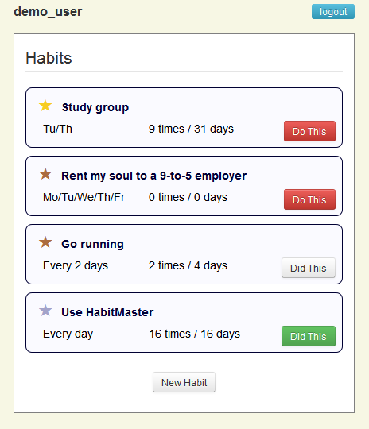

HabitMaster helps you build new habits.
- Define your own tasks and a schedule to stick to: anywhere between daily and weekly.
- Check off your accomplished tasks each day.
- Watch your streaks of uninterrupted activity grow longer.
- Level-up your habits.
- Unlock accomplishments and badges, including your own personally-defined milestones.
- Share your progress with friends.
HabitMaster runs in a web browser. You can access it from anywhere, including from your mobile device.

HabitMaster is still under development. You can:
- Create an account on an live demo instance.*
(Warning: HabitMaster is still in an alpha state. There will be bugs, and your personal habit data could be wiped at any time!) - Learn more from the GitHub wiki.
- Explore, copy, or contribute to the open-source (MIT license) code at GitHub.